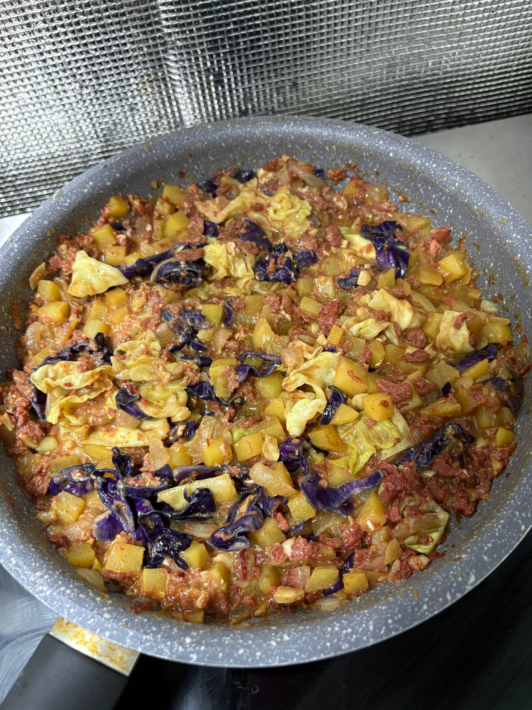

Home
Corned Beef

An easy to cook, simple, hearty meal that the family can enjoy.
Ingredients
- potatoes
- corned beef in a can
- cabbage
- purple cabbage
- pepper
- water
- garlic
- onion
- salt
Steps
- Cut up the garlic, onion, cabbages and potatoes.
- Fry the potatoes first as it takes a long time to soften. Remove from the pan temporarily once the texture is soft.
- Saute the onion first and after emitting its scent, add the garlic as well as purple cabbage.
- Once the garlic browns, add corned beef and 1 cup of water. Add a pinch of salt.
- Wait for it to boil and simmer for 5-10 minutes.